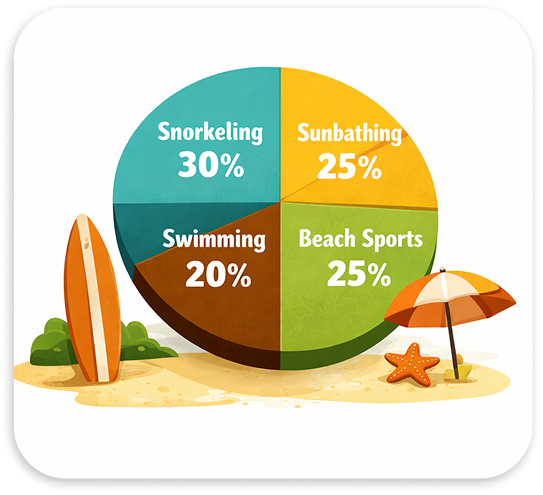
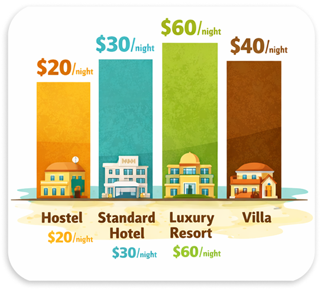

Pattaya Pulse:
Food, Sun and Neon Nights
Thailand's City That Never Sleeps
From bustling promenades to nearby islands, the city offers an energetic and diverse escape. Discover Pattaya City, with vibrant nightlife and rich cultural landmarks.
As a half-Thai, I’ve often felt like Thailand is a dream vacation spot rather than my true home.
But the
second I taste the food here, that changes:
every flavor instantly feels like being back in my mother's
kitchen. Join me as we dive into Pattaya’s vibrant streets, where familiar scents, street food,
and neon
nights blend into something truly special.
Rain periods in Pattaya

Thailand’s rainy season varies throughout the year, with precipitation peaking noticeably during the
summer and early fall months. While spring already sees occasional tropical showers, rainfall
reaches its maximum in summer before gradually dropping off again in winter.
Don't worry though: these heavy downpours are usually brief, refreshing, and quickly clear up for
sunshine.
Popular beach activities
Snorkeling is the most popular beach activity among visitors, accounting for nearly a third of all preferences. Sunbathing and beach sports both follow closely, while swimming rounds out the favorite seaside pastimes for vacationers everywhere.

Accommodation expenses
Hostels offer the cheapest accommodation at twenty dollars per night, while standard hotels cost thirty dollars. Luxury resorts represent the most expensive choice, whereas renting a private villa provides a balanced middle option instead.

Planning a trip to Pattaya becomes much easier once you understand its seasonal weather patterns and accommodation options. Whether you choose a budget-friendly hostel near the coast or a luxury resort tucked away from the noisy streets, the city caters to every traveler's unique taste and budget. From sun-soaked days enjoying various beach activities to vibrant nights spent tasting incredible local street food, Pattaya delivers a rich blend of adventure, comfort, and culture. Pack your bags, embrace the tropical warmth, and get ready to experience an unforgettable journey along Thailand's most energetic coastline.